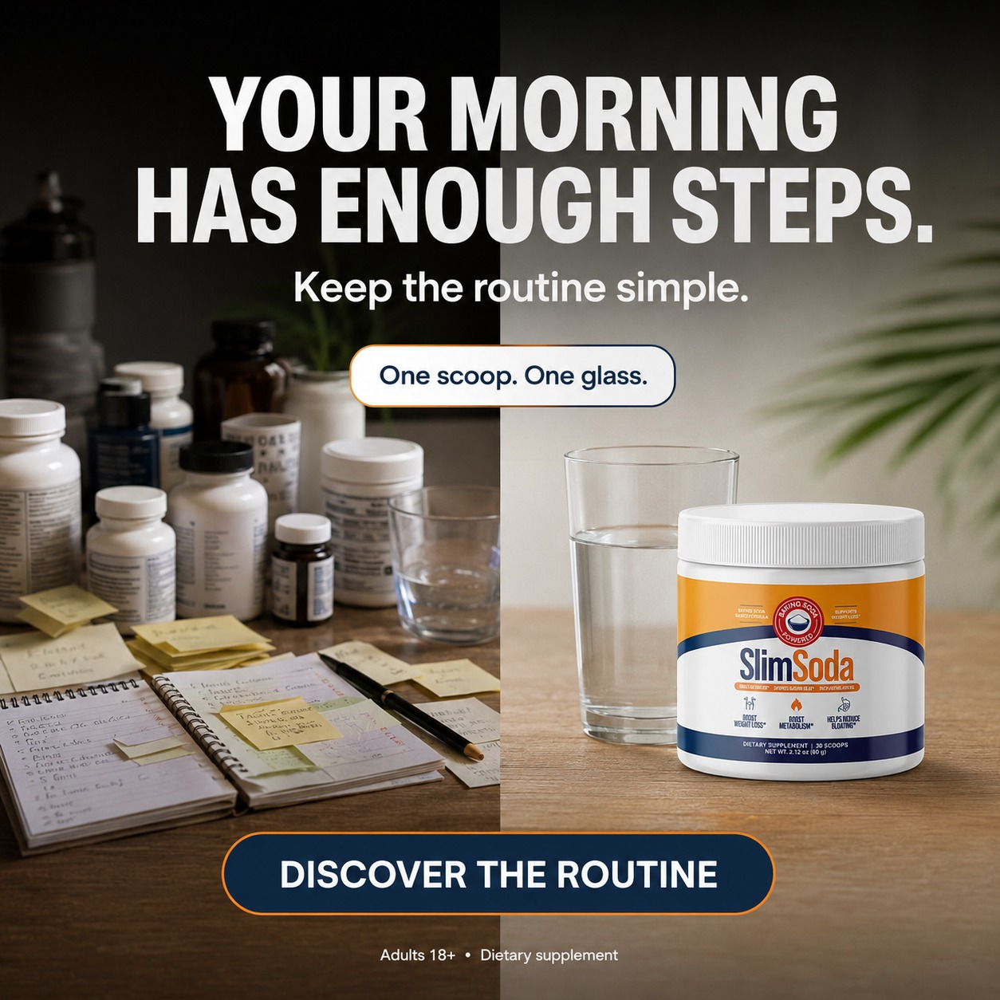
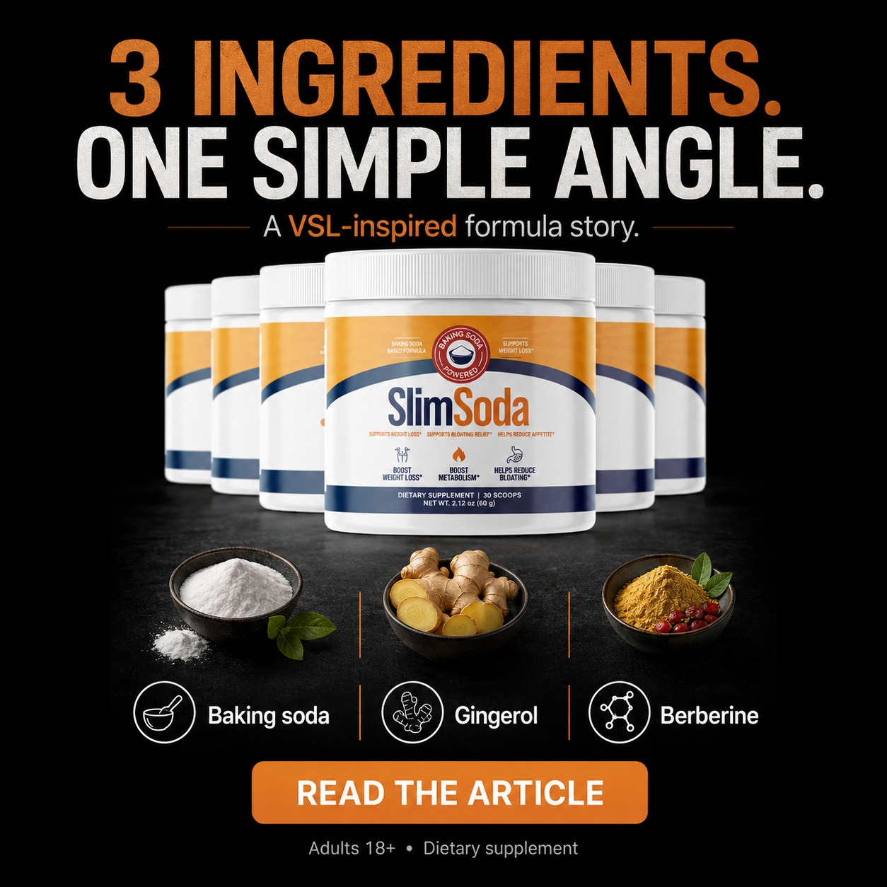
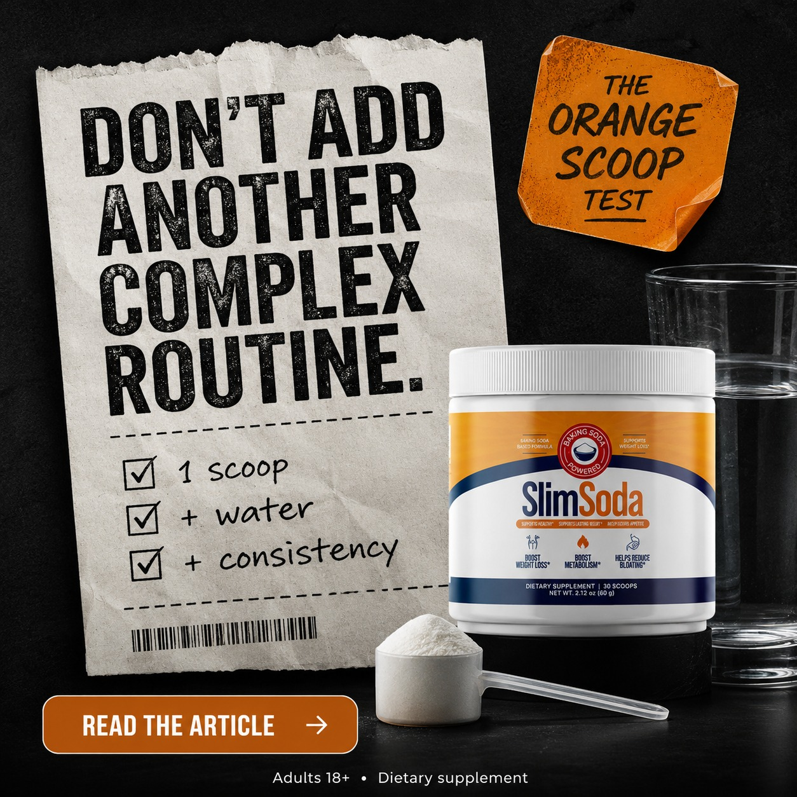
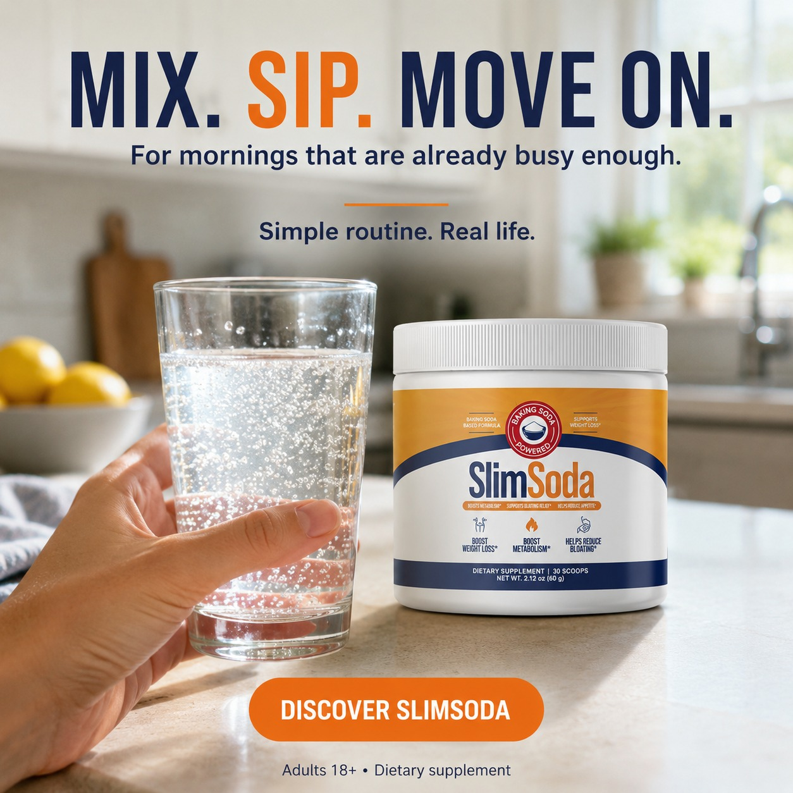
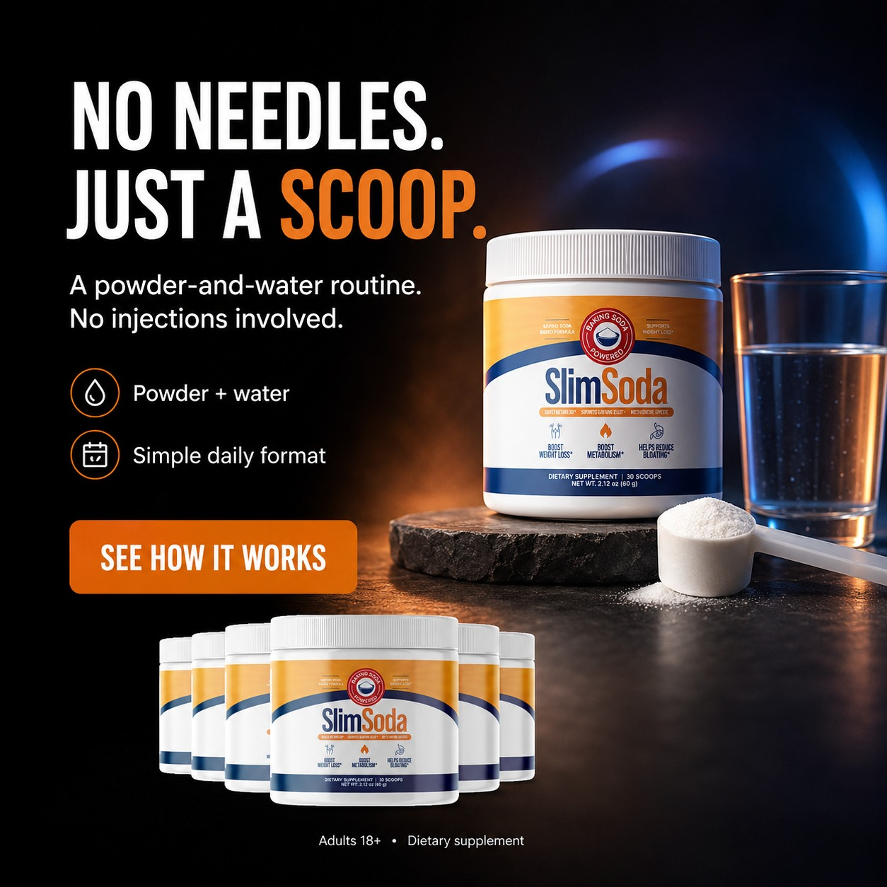

5 unidades criativas do SlimSoda em formato "sponsored article" / "health desk" — mesmo funil, ângulos diferentes. Hero, copy, scoop visual e bottle idênticos em todos. Variação = headline + tagline + formato. Salvo pelo Vinicius em 16/ago/2026 (WhatsApp). 1,6MB total.
5 imagens estáticas, 1:1 (Instagram/FB feed), 1080×1080 ou 1080×1350. Editorial fake: "MORNING ROUTINE EXPLAINED" / "HEALTH DESK" / "SPONSORED WELLNESS ARTICLE" / "MORNING WELLNESS REPORT". Footer comum: "Adults 18+ · Dietary supplement".
Bottle SlimSoda (laranja + navy) + scoop branco + glass of water na cena. Trio repetido 5× com mesmo ângulo. Orange #F5841F + navy #1A2B5C + cream background. Tag "BAKING SODA" + "CONCENTRATED" no seal âncora do mecanismo.
Editorial wrapper (morning report, health desk) → headline de好奇心 ("Why simplicity is resonating", "people keep clicking on") → 3-2-1 sub-cópia ("One scoop. One glass. 3 seconds.") → CTA = READ MORE (não "BUY NOW").
Cada bloco tem a imagem full + breakdown de hook, copy, visual e CTA.





Os 4 sponsored-article usam wrapper fake de news outlet (MORNING ROUTINE EXPLAINED, HEALTH DESK, SPONSORED WELLNESS ARTICLE, MORNING WELLNESS REPORT). Copy = reportagem, não venda. "READ MORE" / "SEE THE ARTICLE" / "OPEN THE STORY" viram soft CTAs que abrem o funil sem pedir compra. Replicável pra Cardio Clear: "MORNING BP REPORT" / "HEART HEALTH DESK" / "WELLNESS DISPATCH" — mesmo tom, cor navy + red.
Bottle + scoop + glass of water aparecem em TODOS os 5 criativos. Ângulo muda (newspaper / magazine / split / wellness report), mas o trio de produto é fixo. Isso é meta-learning: o algoritmo Meta aprende a associar esse trio visual com o produto, e o user reconhece a marca de longe. Replicável: Cardio Clear precisa do próprio trio fixo (bottle + BP monitor + capsule close-up) em TODOS os criativos.
O ritual é reduzido a 3 palavras canônicas repetidas em todos os criativos: "One scoop. One glass. [X seconds/ritual/simple]." Memorável, escaneável, repetível. Replicável pro Cardio Clear: "Two capsules. Before coffee. 30 seconds." → mesmo formato de 3-3-2.
Os 4 sponsored-article têm o nome do ingrediente principal no headline OU subhead: "baking soda morning ritual" / "BAKING SODA" no seal da bottle. O creator cita abertamente o ingrediente "barato" como mecanismo. Reduz ceticismo (não é "fórmula secreta cara"), ancora o ritual como recipe replicável. Replicável pro Cardio Clear: nomear "Sardinian Bitter Honey" / "Cagnulari grape" no headline quando possível.
Presente em 4 dos 5. Sinaliza compliance FTC de cara (não é claim, é disclaimer). Replicável: Cardio Clear precisa do footer análogo ("Adults 18+ · Dietary supplement. Not intended to diagnose, treat, cure or prevent any disease. Talk to your doctor before use."). Disclaimer longo = análise, disclaimer curto = scroll-stopper.
Todos os 5 são quadrado ou quase quadrado (IG feed + FB feed), não vertical Stories/Reels. Por quê: sponsored article precisa parecer ARTIGO, não vídeo. Vertical = nativo de Reels, quadrado = nativo de feed estático. Replicável pro Cardio Clear: criativos image-first = 1:1, criativos VSL-cover = 9:16.
| # | Wrapper | Hook angle | Format | CTA |
|---|---|---|---|---|
| 01 | (none — direct) | Anti-ritual complicado (split visual) | Square 1:1 | DISCOVER THE ROUTINE |
| 02 | MORNING ROUTINE EXPLAINED | Editorial curiosity (resonating with readers) | Square 1:1 | SEE THE ARTICLE |
| 03 | SPONSORED WELLNESS ARTICLE | Recipe revival (baking soda morning ritual) | Portrait 4:5 | OPEN THE STORY |
| 04 | MORNING WELLNESS REPORT | Buzz (getting so much attention) | Square 1:1 | READ THE ARTICLE |
| 05 | HEALTH DESK | Viral + speed (3-second mix sparks curiosity) | Square 1:1 | READ MORE → |
"One scoop. One glass. Why simplicity is resonating with readers"
"The baking soda morning ritual people keep clicking on"
"Why this simple morning routine is getting so much attention"
"3-second morning mix sparks curiosity online"
"READ THE ARTICLE →"
"SEE THE ARTICLE"
"OPEN THE STORY"
"READ MORE →"
"DISCOVER THE ROUTINE"
100% soft CTA — nenhum "BUY NOW" ou "SHOP NOW". Compatível com Meta native ad policy.